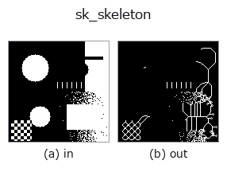

region op• 資料種類:region → region
• 呼叫:fullseye.apply(img, "sk_skeleton", a=0.5, b=0.5)(2-D 的模型是一張圖 + 兩個純量旋鈕 a,b∈[0,1])
• HALCON 對應:skeleton(其含義與參數可參考 HALCON 手冊)

*圖為在 128×128 合成輸入上實際執行的輸出。左為輸入，右為輸出(非影像的回傳值直接顯示其值)。*
區域骨架化(skeletonization)。在保持前景區域拓撲結構(連通關係、孔洞數量)不變的前提下,將其細化為寬度 1 像素的線條。
> 以下的詳細說明為原文 —— 摘要與標題已翻譯。
HALCON の skeleton(Compute the skeleton of a region.)に相当(近似。アルゴリズムは Zhang-Suen 系)。実装は `morphology.skeletonize(binm(v)) —— 入力はまず binm`(> 0.5 のしきい値)で真偽値化される。a, b は未使用。
• 範例資料目錄(下載 URL / 授權) —— 2-D 用 skimage.data(BSD/公有領域)加合成圖,3-D 給出真實資料源(Stanford/PDS 等)的下載 URL。
• 運算子來歷與參考文獻 —— 該運算子族所依據的研究/方法出處。
• 演算法的正典(作者・年份)與用途見上面的族使用指南。
下面的程式已確認可以執行(與圖相同的輸入)。在 Studio 說明中，此區塊會變成按鈕，可當場載入並執行。
threshold 0.50 0.50 sk_skeleton 0.50 0.50
▸ Load this pipeline · Load & run
• gallery2d_region — py -3.11 examples/gallery2d_region.py
region 作為輸入)identity · reg_erode · reg_dilate · reg_open · reg_close · fill_holes · select_largest · remove_small
region)reg_erode · reg_dilate · reg_open · reg_close · fill_holes · select_largest · remove_small · invert_region
*Provenance: ops.py — 2D 運算子登記表。本條目由 tools/opdocs.py md 自動產生(請勿手動編輯)。*
© 2026 Kazufumi Furuse — Fullseye operator documentation. Licensed under Apache-2.0.